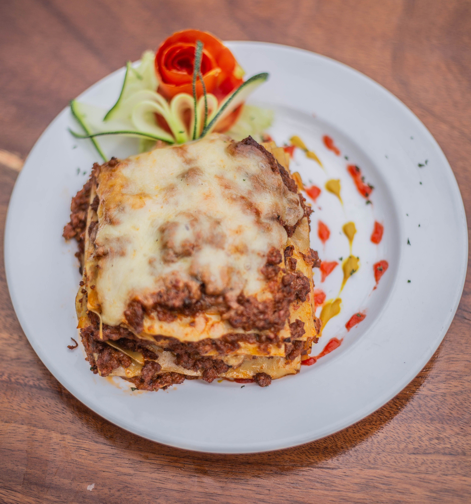

Lasagna Recipe
Home

Lasagna is a classic Italian baked dish made by layering wide, flat pasta sheets with savory sauces (like meat ragù or tomato sauce) and rich cheeses (such as mozzarella, ricotta, and Parmesan). It is baked in the oven until the layers meld and the top is bubbly and golden.
Ingredients
- Lasagna noodles
- Ground beef or Italian sausage
- Tomato sauce
- Ricotta cheese
- Mozzarella cheese
- Parmesan cheese
- Garlic and herbs (like basil and oregano)
- Cook the noodles according to package instructions.
- In a pan, cook the ground beef or sausage until browned. Add garlic and tomato sauce, and simmer.
- In a baking dish, layer noodles, meat sauce, ricotta, and mozzarella. Repeat layers and top with Parmesan.
- Bake at 375°F (190°C) for about 45 minutes until bubbly and golden on top.